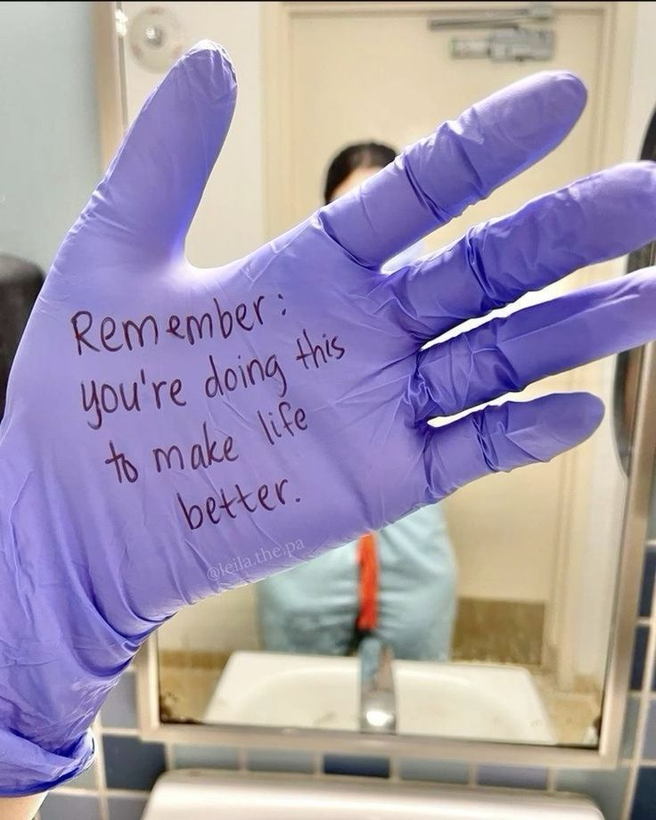
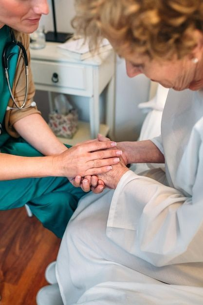

Helping others has always been important to me. It makes me happy knowing that I can make a positive difference and help in someone's life, no matter how small. I love boosting peoples moods up and doing thing for them that'll make them feel joy. Over time, this want to support and care for people grew into a strong passion for the medical field. What excites me about healthcare is the chance to combine compassion and knowledge to help people heal and live healthier lives. Whether it's comforting someone during a tough time or finding a solution to a health challenge, I want to be part of that journey.